Catalogue
Alarme intrusion
Détecteurs, claviers, sirènes et commandes. Baseline pour l’essentiel sans fil ; Superior pour les projets exigeants.

71 références

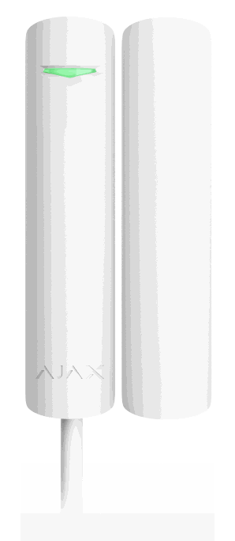


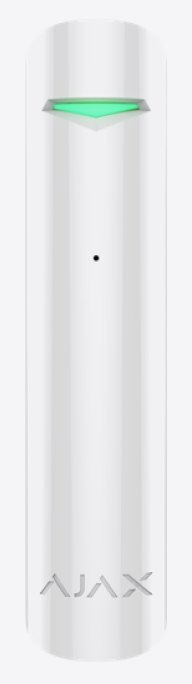
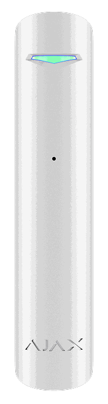


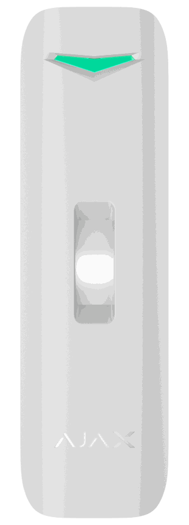


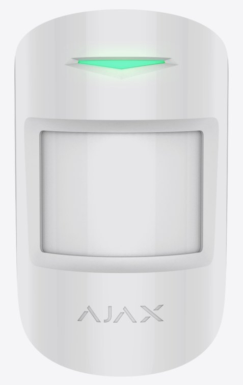


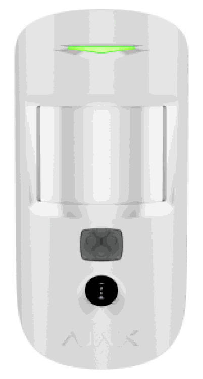


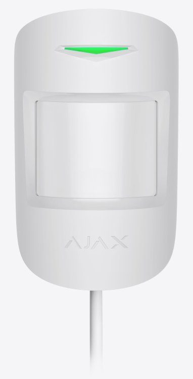

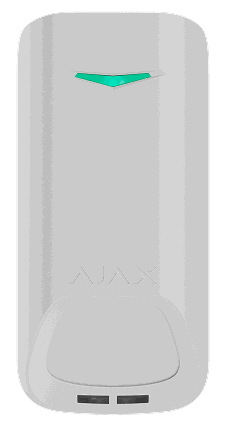


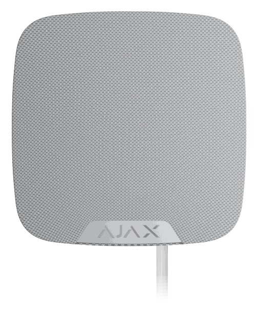

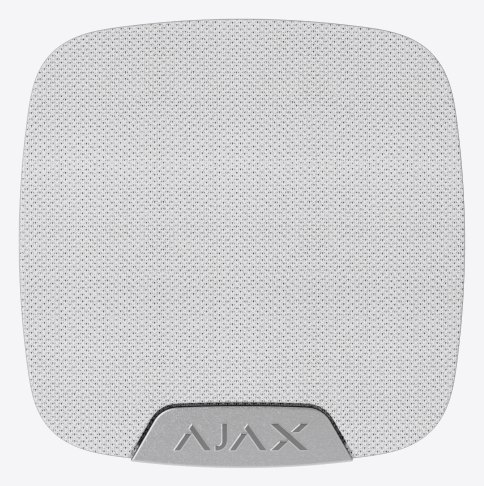
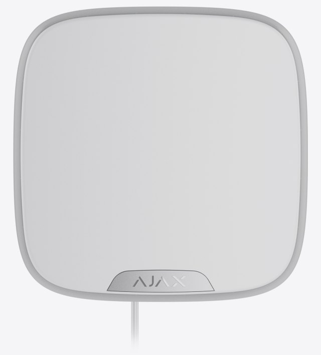
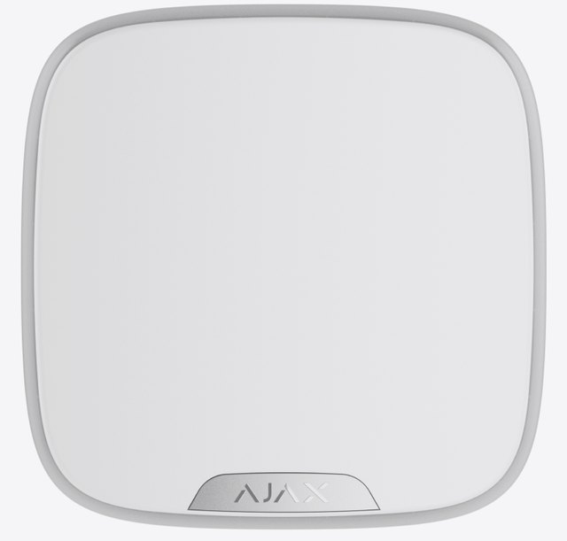
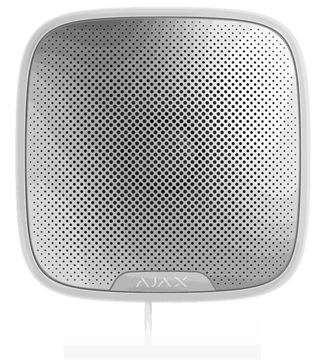


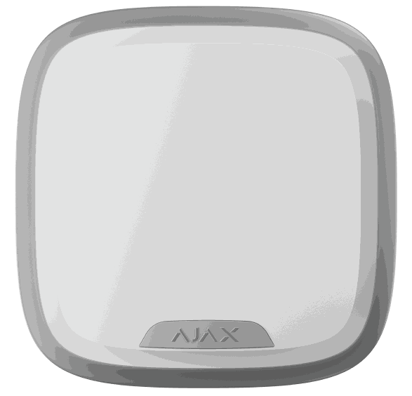


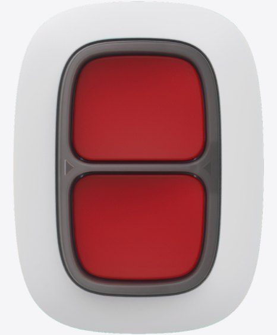


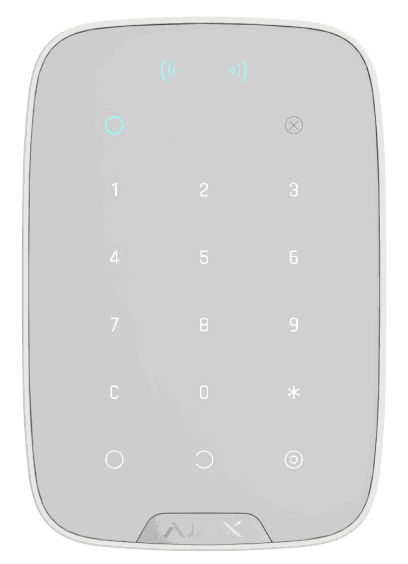

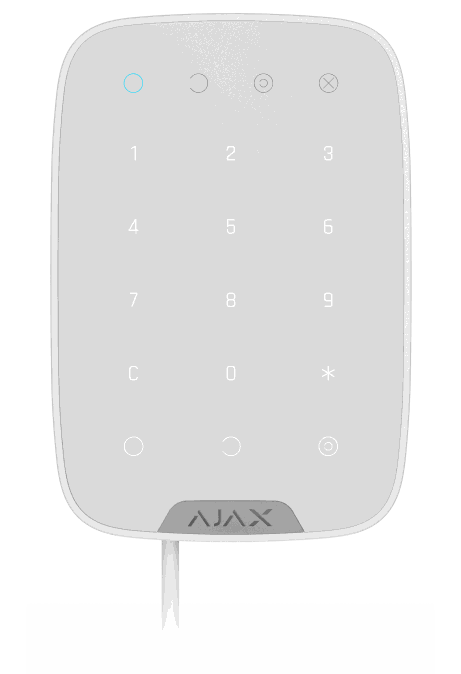


Aucune référence ne correspond à ces critères.
Besoin d’aide pour composer votre système ?
Étude gratuite · Partenaire agréé · Toute l’île · Intervention sur site.